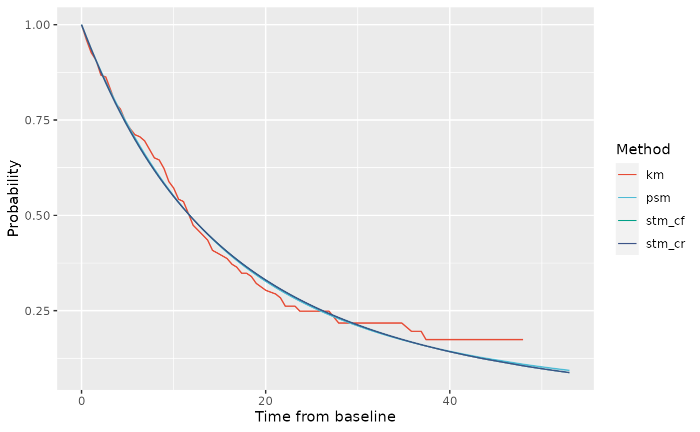
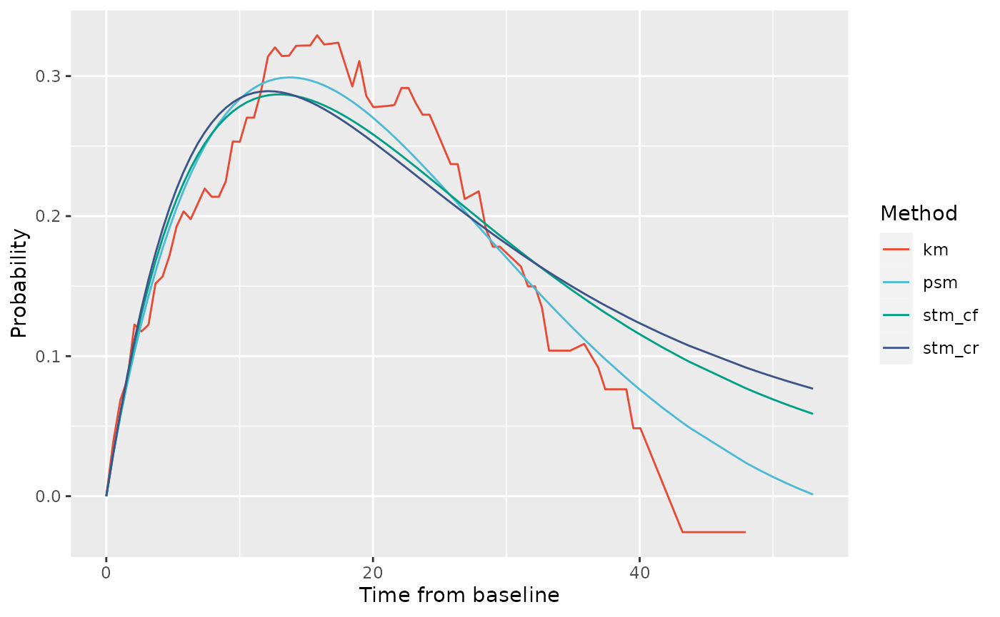
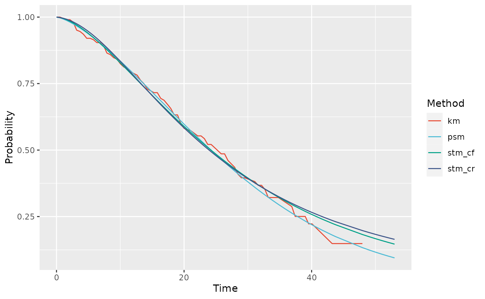
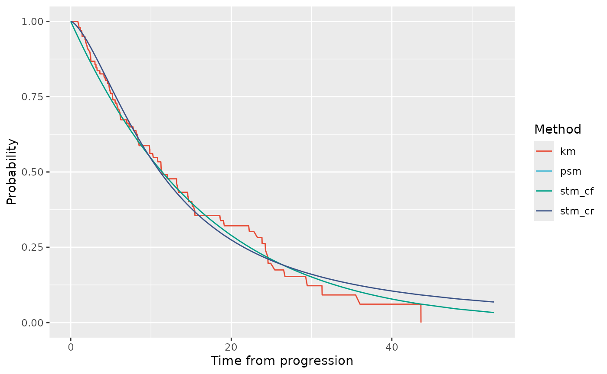

Introduction
This vignette walks through evaluating the partitioned survival model
(PSM) and state transition model structures (either clock reset, STM-CR,
or clock forward types, STM-CF) to a dataset derived from the
bosms3 dataset that comes with the flexsurv package (Jackson 2016). A review of PSMs and STMs in
oncology cost-effectiveness models is provided by Woods et al. (2020).
First we need to load the packages of interest. If you haven’t installed psm3mkv yet, please see the installation instructions to install it with all its dependencies. We will also be using Angelo Canty and B. D. Ripley (2024), Xiao (2024) and Wickham and Henry (2023).
Obtaining a suitable dataset
First we create a suitable patient-level dataset using
create_dummydata(). Here we load data derived from the
bosms3 dataset with the flexsurv package (Jackson 2016).
# Create and review the dummy dataset
bosonc <- create_dummydata("flexbosms")
head(bosonc)
#> # A tibble: 6 × 7
#> ptid pfs.durn pfs.flag os.durn os.flag ttp.durn ttp.flag
#> <int> <dbl> <dbl> <dbl> <dbl> <dbl> <dbl>
#> 1 1 18.7 1 42.9 1 18.7 1
#> 2 2 12.0 1 23.3 1 12.0 1
#> 3 3 0.452 1 8.81 1 0.452 1
#> 4 4 9.07 1 52.7 1 9.07 1
#> 5 5 47.7 0 47.7 0 47.7 0
#> 6 6 3.26 1 13.1 1 3.26 1
summary(bosonc)
#> ptid pfs.durn pfs.flag os.durn
#> Min. : 1.00 Min. : 0.1071 Min. :0.0000 Min. : 0.881
#> 1st Qu.: 51.75 1st Qu.: 4.2381 1st Qu.:0.0000 1st Qu.: 7.893
#> Median :102.50 Median : 9.7262 Median :1.0000 Median :15.226
#> Mean :102.50 Mean :11.5630 Mean :0.6471 Mean :17.055
#> 3rd Qu.:153.25 3rd Qu.:16.2321 3rd Qu.:1.0000 3rd Qu.:22.729
#> Max. :204.00 Max. :48.5357 Max. :1.0000 Max. :52.702
#> os.flag ttp.durn ttp.flag
#> Min. :0.0000 Min. : 0.1071 Min. :0.0000
#> 1st Qu.:0.0000 1st Qu.: 4.2381 1st Qu.:0.0000
#> Median :0.0000 Median : 9.7262 Median :1.0000
#> Mean :0.4755 Mean :11.5630 Mean :0.5049
#> 3rd Qu.:1.0000 3rd Qu.:16.2321 3rd Qu.:1.0000
#> Max. :1.0000 Max. :48.5357 Max. :1.0000The dataset contains TTP, PFS and OS data for 204 patients.
Fit survival curves to the relevant endpoints
The three cost-effectiveness model structures we are considering rely on modeling not only of PFS, TTP and OS, but additionally three other endpoints:
- Pre-progression death (PPD).
- Post progression survival as a function of time from baseline (known as ‘clock forward’, PPS-CF).
- Post-progression survival as a function of time from progression (known as ‘clock reset’, PPS-CR).
Once we have a suitable dataset, we will fit statistical models to these six endpoints.
Parametric distributions
Let us start by considering parametric distributions. This uses the
function fit_ends_mods(), so called because it cycles
through fitting endpoints and models. The original dataset contained
only three of these endpoints, the other three endpoints are calculated
within the function.
# Create a vector of distributions of interest (flexsurv notation)
alldists <- c("exp", "weibullPH", "llogis", "lnorm", "gamma", "gompertz", "gengamma")
# Fit all distributions to all endpoints (except gengamma to PPD and TTP)
allfits_par <- fit_ends_mods_par(
bosonc,
cuttime = 0,
ppd.dist = alldists[1:6],
ttp.dist = alldists[1:6],
pfs.dist = alldists,
os.dist = alldists,
pps_cf.dist = alldists,
pps_cr.dist = alldists
)
# Example 1 - PFS endpoint, distribution 2 (weibullPH)
allfits_par$pfs[[2]]$result
#> Call:
#> .f(formula = ..1, dist = ..2)
#>
#> Estimates:
#> est L95% U95% se
#> shape 0.9313 0.8080 1.0733 0.0675
#> scale 0.0676 0.0453 0.1009 0.0138
#>
#> N = 204, Events: 132, Censored: 72
#> Total time at risk: 2358.845
#> Log-likelihood = -512.0729, df = 2
#> AIC = 1028.146
# Example 2 - Parameter values for PPS-CF and PPS-CR endpoints for distribution 3 (llogis)
allfits_par$pps_cf[[3]]$result$res
#> est L95% U95% se
#> shape 1.625037 1.264658 2.08811 0.2078833
#> scale 12.184292 8.588947 17.28465 2.1737642
allfits_par$pps_cr[[3]]$result$res
#> est L95% U95% se
#> shape 1.602773 1.321696 1.943626 0.1576797
#> scale 11.031674 8.769443 13.877487 1.2917274We have fitted multiple parametric distributions to each endpoint. We
only need to retain the best-fitting distribution, which we select using
find_bestfit_par() on the basis of the distribution having
the lowest Akaike Information Criterion (AIC).
# Pick out best distribution according to min AIC
fitpar.ppd <- find_bestfit(allfits_par$ppd, "aic")
fitpar.ttp <- find_bestfit(allfits_par$ttp, "aic")
fitpar.pfs <- find_bestfit(allfits_par$pfs, "aic")
fitpar.os <- find_bestfit(allfits_par$os, "aic")
fitpar.pps_cf <- find_bestfit(allfits_par$pps_cf, "aic")
fitpar.pps_cr <- find_bestfit(allfits_par$pps_cr, "aic")
# Inspect the selection for PFS
fitpar.pfs
#> $fit
#> Call:
#> .f(formula = ..1, dist = ..2)
#>
#> Estimates:
#> est L95% U95% se
#> rate 0.05596 0.04718 0.06637 0.00487
#>
#> N = 204, Events: 132, Censored: 72
#> Total time at risk: 2358.845
#> Log-likelihood = -512.5726, df = 1
#> AIC = 1027.145
#>
#>
#> $results
#> # A tibble: 7 × 13
#> id valid conv posdef npts dists pars loglik aic bic ic rankaic
#> <int> <lgl> <lgl> <lgl> <dbl> <chr> <dbl> <dbl> <dbl> <dbl> <dbl> <dbl>
#> 1 1 TRUE TRUE TRUE 204 exp 1 -513. 1027. 1030. 1027. 1
#> 2 2 TRUE TRUE TRUE 204 weibull… 2 -512. 1028. 1035. 1028. 3
#> 3 3 TRUE TRUE TRUE 204 llogis 2 -513. 1031. 1037. 1031. 6
#> 4 4 TRUE TRUE TRUE 204 lnorm 2 -517. 1038. 1044. 1038. 7
#> 5 5 TRUE TRUE TRUE 204 gamma 2 -512. 1028. 1035. 1028. 4
#> 6 6 TRUE TRUE TRUE 204 gompertz 2 -512. 1027. 1034. 1027. 2
#> 7 7 TRUE TRUE TRUE 204 gengamma 3 -512. 1030. 1040. 1030. 5
#> # ℹ 1 more variable: rankbic <dbl>Royston-Parmar splines models
An alternative approach to parametric modeling is the use of
Royston-Parmar splines (Royston and Parmar
2002). We can follow a similar approach, again using flexsurv
(Jackson 2016) to identify the
best-fitting spline distributions. To the six endpoints, we fit 9 spline
models: 1, 2 or 3 (internal) knots with either odds, hazard or normal
scales. This uses fit_ends_mods_spl().
# Fit 1-3 knot splines with all 3 scales (odds, hazard, normal) to each endpoint
allfits_spl <- fit_ends_mods_spl(bosonc)
# Example - PFS endpoint - 1 knot, odds scale
allfits_spl$pfs[[2]]$result
#> Call:
#> .f(formula = ..1, k = ..2, scale = ..3)
#>
#> Estimates:
#> est L95% U95% se
#> gamma0 -2.848058 -3.298634 -2.397482 0.229890
#> gamma1 0.832337 0.449968 1.214706 0.195090
#> gamma2 -0.025453 -0.051358 0.000453 0.013217
#>
#> N = 204, Events: 132, Censored: 72
#> Total time at risk: 2358.845
#> Log-likelihood = -511.7148, df = 3
#> AIC = 1029.43
allfits_spl$pfs[[2]]$result$aux$scale # Scale
#> [1] "odds"
allfits_spl$pfs[[2]]$result$aux$knots # Knot locations (log time)
#> 50%
#> -2.233592 2.008522 3.882300We have fitted multiple splines to each endpoint. We only need to
retain the best-fitting distribution, which we select on the basis of
the distribution having the lowest Akaike Information Criterion (AIC).
We use find_bestfit() for this.
# Pick out best distribution according to min AIC
fitspl.ppd <- find_bestfit(allfits_spl$ppd, "aic")
fitspl.ttp <- find_bestfit(allfits_spl$ttp, "aic")
fitspl.pfs <- find_bestfit(allfits_spl$pfs, "aic")
fitspl.os <- find_bestfit(allfits_spl$os, "aic")
fitspl.pps_cf <- find_bestfit(allfits_spl$pps_cf, "aic")
fitspl.pps_cr <- find_bestfit(allfits_spl$pps_cr, "aic")
# Inspect the selection for PFS
fitspl.pfs
#> $fit
#> Call:
#> .f(formula = ..1, k = ..2, scale = ..3)
#>
#> Estimates:
#> est L95% U95% se
#> gamma0 -1.62401 -1.84681 -1.40122 0.11367
#> gamma1 0.37082 0.20155 0.54008 0.08636
#> gamma2 -0.02243 -0.03539 -0.00947 0.00661
#>
#> N = 204, Events: 132, Censored: 72
#> Total time at risk: 2358.845
#> Log-likelihood = -511.4637, df = 3
#> AIC = 1028.927
#>
#>
#> $results
#> # A tibble: 9 × 14
#> id valid conv posdef npts scales nknots pars loglik aic bic ic
#> <int> <lgl> <lgl> <lgl> <dbl> <chr> <int> <dbl> <dbl> <dbl> <dbl> <dbl>
#> 1 1 TRUE TRUE TRUE 204 hazard 1 3 -512. 1030. 1040. 1030.
#> 2 2 TRUE TRUE TRUE 204 odds 1 3 -512. 1029. 1039. 1029.
#> 3 3 TRUE TRUE TRUE 204 normal 1 3 -511. 1029. 1039. 1029.
#> 4 4 TRUE TRUE TRUE 204 hazard 2 4 -512. 1032. 1045. 1032.
#> 5 5 TRUE TRUE TRUE 204 odds 2 4 -511. 1031. 1044. 1031.
#> 6 6 TRUE TRUE TRUE 204 normal 2 4 -511. 1031. 1044. 1031.
#> 7 7 TRUE TRUE TRUE 204 hazard 3 5 -510. 1030. 1046. 1030.
#> 8 8 TRUE TRUE TRUE 204 odds 3 5 -510. 1030. 1047. 1030.
#> 9 9 TRUE TRUE TRUE 204 normal 3 5 -510. 1030. 1046. 1030.
#> # ℹ 2 more variables: rankaic <dbl>, rankbic <dbl>Combine the best fits
Finally, we select our preferred curves for each endpoint. These may or may not be those selected as the minimum AIC and may be parametric fits or spline fits. This list is deliberately programmed manually - and carefully. Our example does not use the best fits in each case but merely illustrates the options available to the modeler.
# Bring together our preferred fits for each endpoint in a list
params <- list(
ppd = fitpar.ppd$fit,
ttp = fitpar.ttp$fit,
pfs = fitspl.pfs$fit,
os = fitspl.os$fit,
pps_cf = allfits_par$pps_cf[[2]]$result,
pps_cr = allfits_spl$pps_cr[[2]]$result
)Let us count how many parameters we are using in each model.
# Pull out number of parameters used for each endpoint
count_npar <- map_vec(1:6, ~ params[[.x]]$npars)
# PSM uses PFS (3) and OS (4) endpoints
sum(count_npar[c(3, 4)])
#> [1] 6
# STM_CF uses PPD (1), TTP (2) and PPS_CF (5) endpoints
sum(count_npar[c(1, 2, 5)])
#> [1] 6
# STM_CR uses PPD (1), TTP (2) and PPS_CR (6) endpoints
sum(count_npar[c(1, 2, 6)])
#> [1] 7Comparing likelihood values for the three model structures
Given the selected survival modeling of each endpoint, we can now calculate and compare the (log-)likelihood of each of the three model structures. We can also check this output to ensure that the number of parameters used in each model structure matches what we derived earlier.
ll_all <- calc_likes(bosonc, params)
ll_all
#> $all
#> # A tibble: 4 × 12
#> methname npar npts_1 npts_2 npts_3 npts_4 npts_tot ll_1 ll_2 ll_3 ll_4
#> <chr> <dbl> <int> <int> <int> <int> <int> <dbl> <dbl> <dbl> <dbl>
#> 1 psm_simple 7 72 29 35 68 204 -64.8 -152. -151. NA
#> 2 psm_complex 8 72 29 35 68 204 -64.8 -148. -149. -471.
#> 3 stm_cf 6 72 29 35 68 204 -64.7 -147. -148. -474.
#> 4 stm_cr 7 72 29 35 68 204 -64.7 -147. -148. -474.
#> # ℹ 1 more variable: ll_tot <dbl>
#>
#> $valid
#> # A tibble: 4 × 12
#> methname npar npts_1 npts_2 npts_3 npts_4 npts_tot ll_1 ll_2 ll_3 ll_4
#> <chr> <dbl> <int> <int> <int> <int> <int> <dbl> <dbl> <dbl> <dbl>
#> 1 psm_simple 7 72 29 35 67 203 -64.8 -152. -151. -469.
#> 2 psm_complex 8 72 29 35 67 203 -64.8 -148. -149. -466.
#> 3 stm_cf 6 72 29 35 67 203 -64.7 -147. -148. -468.
#> 4 stm_cr 7 72 29 35 67 203 -64.7 -147. -148. -468.
#> # ℹ 1 more variable: ll_tot <dbl>
#>
#> $sum
#> # A tibble: 4 × 8
#> methname npts npar ll aic bic rank_aic rank_bic
#> <chr> <int> <dbl> <dbl> <dbl> <dbl> <dbl> <dbl>
#> 1 psm_simple 203 7 -836. 1685. 1709. 4 4
#> 2 psm_complex 203 8 -828. 1672. 1698. 3 3
#> 3 stm_cf 203 6 -828. 1667. 1687. 2 1
#> 4 stm_cr 203 7 -827. 1667. 1690. 1 2In this case, the model structures could be fitted to 203 of the 204 patients. Among the 203 patients where models could be fitted, the STM-CR model has the greatest likelihood (best fitting) and also the lowest AIC (most efficient). (Since these are not nested models, and statistical distributions under the null hypothesis are not easily formed, we cannot readily derive a p-value for the statistical significance of this difference.)
Comparing the implied (restricted) mean durations
In order to understand the degree of structural uncertainty
(sensitivity to the choice of model structure), we calculate the
(restricted) mean durations in progression-free (PF) and progressed
disease (PD) states by model type. To do this, we call the
calc_allrmds() function with the dataset and statistical
distributions we wish to consider for each endpoint. The function also
allows specification of the patient subset to use (inclset,
important for bootstrapping later) and the time horizon. The units for
the time horizon are 52.18 times shorter than the units for the output
because - the time horizon can be considered to be in units of years,
whereas the output is in units of weeks.
# Call the RMD functions
rmd_all <- calc_allrmds(bosonc, dpam = params)
# Then review the mean duration in PF, PD and total alive (OS)
rmd_all$results
#> # A tibble: 3 × 4
#> pf pd os model
#> <dbl> <dbl> <dbl> <chr>
#> 1 22.0 5.41 27.4 PSM
#> 2 20.0 10.4 30.4 STM-CF
#> 3 20.0 13.3 33.3 STM-CRThe two STMs estimate a duration in the PF state slightly longer than the PSM. The PSM also estimates the least time in the PD state and alive overall than the other models. The STM-CF provides the longest estimate of time in the PD state and overall.
The above output can be bootstrapped to generate standard errors.
Here we use just 10 boostrap samples (R=10) just to
illustrate the process. In practice, we would want to use far more than
10 samples.
# Bootstrap to calculate SE over 10 bootstrap samples
boot::boot(
data = bosonc,
statistic = calc_allrmds,
R = 10, # Number of samples
cuttime = 0,
Ty = 10,
dpam = params,
boot = TRUE
)
#>
#> ORDINARY NONPARAMETRIC BOOTSTRAP
#>
#>
#> Call:
#> boot::boot(data = bosonc, statistic = calc_allrmds, R = 10, cuttime = 0,
#> Ty = 10, dpam = params, boot = TRUE)
#>
#>
#> Bootstrap Statistics :
#> original bias std. error
#> t1* 22.02965 1.6639145 3.764406
#> t2* 19.95750 1.0415112 3.079635
#> t3* 19.95750 1.0415112 3.079635
#> t4* 5.41287 -0.4906403 3.728078
#> t5* 10.41262 0.7997145 2.232518
#> t6* 13.32346 1.4157501 3.260064
#> t7* 27.44252 1.1732742 2.421223
#> t8* 30.37012 1.8412257 2.909540
#> t9* 33.28096 2.4572614 3.736715Note that the percentiles information reported indicates that in a small number of samples, the restricted mean duration in PD was restricted to be negative in the PSM. This indicates an inconsistency between the statistical models used in this case for modeling PFS and OS, and may be an additional reason why STMs may be preferred in this case.
Visual inspection of model fits
Creating the four graphics of model fit is straightforward.
# Generate graphs (can take time)
ptdgraphs <- graph_survs(bosonc, params)We can then compare state membership probabilities for the PF and PD states.
# State membership probabilities for PF state
ptdgraphs$graph$pf + scale_color_npg()
#> Warning: Removed 1 row containing missing values or values outside the scale range
#> (`geom_line()`).
The PF curves fully overlap with each other in the observed period, and appear to fit well visually to the observed PF data.
# State membership probabilities for PD state
ptdgraphs$graph$pd + scale_color_npg()
#> Warning: Removed 1 row containing missing values or values outside the scale range
#> (`geom_line()`).
There are big differences in the fit between the models to the PD membership probability. The best visual fit comes from the PSM. Both STMs estimate a higher probability of PD membership at later times than was observed. The highest probabilities are from the STM-CF model.
Next, we can look at probabilities of being alive (i.e: membership in either PF or PD state).
# State membership probabilities for OS
ptdgraphs$graph$os + scale_color_npg()
Again, all three models fit fairly well up to 15 weeks. The closest visual fit to the OS curve is from the PSM. This is not surprising because the PSM involves fitting the OS endpoint directly. Following from the PD membership graphics, both STMs appear to over-estimate OS at longer durations relative to the observed data. However, recall that overall the PSM had the worse fit to the data according to likelihood, AIC and BIC.
Finally we can look at probabilities of post-progression survival. This is observed and fitted for the STMs not the the PSM. The STM-CR estimate follows directly from the fitted PPS-CR survival curve. The STM-CF estimate is derived based on the average, across patients, of patients’ expected PPS-CF survival relative to their TTP timepoint.
# Probabilities of PPS
ptdgraphs$graph$pps + scale_color_npg()
#> Warning: Removed 393 rows containing missing values or values outside the scale range
#> (`geom_line()`).